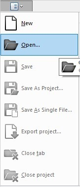
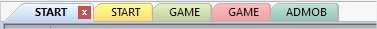
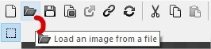
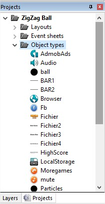
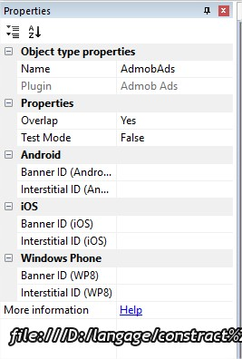

Download Construct 2 from the official Web Site:
Official Construct 2 Manual :
Top Tutorials:
https://www.scirra.com/tutorials/top
IMPORTANT! Before opening .CAPX files, be sure you have installed “lunarray.litetween” the free behaviour to your construct 2 program file and restart the program.
Extract to:
C:\Program Files\Construct 2\exporters\html5\behaviors
Run the Construct 2, go to FILE / OPEN.

Select “ZigZag Ball.capx” file
At the top of the desktop we have the "tabs" of the project.

Go to the folder HTML5/images, and just replace each image with yours, but retain an original sizes and proportions. Also don't forget to change game icon in /HTML5 folder. It is all what you need to change images in the game.
Go to the folder HTML5/media, Just replace each audio file with yours.
Double click on the image, then click “Load an image from a file”

IMPORTANT! You must verify image points before change it, size and mask to.
Easy: go to game properties and change Fullscreen in browser to Scale outer.
Go to projects /Objects types/AdmobAds

On the left side, we have AdMob properties, Ad your Banner and Interstitial ID, change Test Mode to False.

You can change the setting from “AdMob” event sheet.
http://www.sharelinkgenerator.com